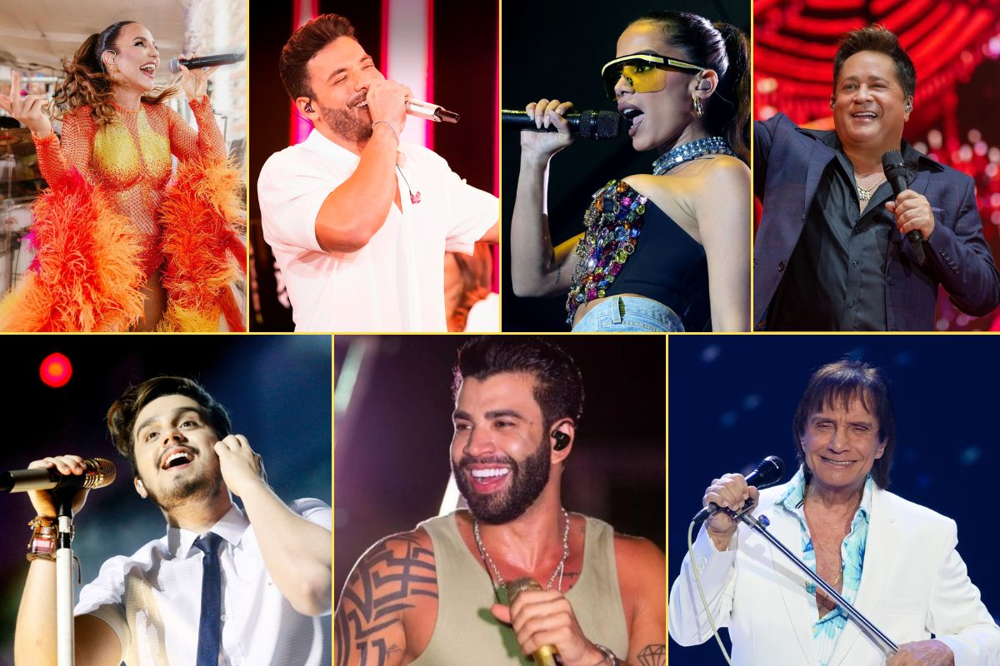

🖌Crie o Mascote! 🎨
Explore os Temas de Brasilidade
🌿 Natureza, Geografia, História e Sociedade

ğŸ Cultura Popular e Tradições
Carnaval
A maior festa popular brasileira em cores, sons e história.
Por Sofia Alcantara FerreiraFesta Junina
Tradições, comidas e danças do interior do Brasil.
Por Laura Sayuri Terukina
Capoeira
A arte-luta que expressa resistência e identidade afro-brasileira.
Por Leonardo Porfirio CorreaFolclore Brasileiro
Lendas, mitos e personagens do imaginário nacional.
Por Vinicius Lucas Felix dos SantosLendas Urbanas Brasileiras
Histórias misteriosas e populares contadas pelo paÍs.
Por João Victor Rodrigues de OliveiraDoces Brasileiros
Receitas e tradições açucaradas do Brasil.
Por Yasmin Ribeiro de Oliveira
Culinária Brasileira
Sabores tÍpicos e regionais que formam nossa identidade.
Por Igor Delfino Braga🨠Arte, MÍdia e Cultura Pop
Principais Novelas Brasileiras
Tramas que marcaram épocas na TV brasileira.
Por Cibele Elói Ferreira
Dubladores Brasileiros
Vozes que marcaram gerações nas telas.
Por Marina Vieira SchneiderPersonagens Brasileiros nas MÍdias
Representações nacionais em quadrinhos, cinema e TV.
Por Caio André Fukunaru de LimaAnimes e Mangás Brasileiros
Produções e artistas que unem o Brasil ao universo otaku.
Por Enrico Carvalho MarquesArtistas no Cenário Geek e Pop
Ilustradores, cosplayers e influencers da cultura pop nacional.
Por Tailyni Victoria Renovato SatÍrioGames Brasileiros
Desenvolvedores e estúdios que ganham o mundo.
Por Felipe Oliveira Duarte LimaEscritores Brasileiros
Autores que moldaram a literatura nacional.
Por Ewerton Henrique Marques da SilvaGrafite Brasileiro
Expressão artÍstica urbana reconhecida mundialmente.
Por Rafaella Ribeiro Reina
RPG no Brasil
O crescimento do universo de RPG e sua comunidade no paÍs.
Por Bruna Martins Oliveira Campos🵠Música
MPB
Música Popular Brasileira e sua influência cultural.
Por Gustavo Neco de CastroPagode
O ritmo brasileiro que conquistou gerações.
Por Otávio VinÍcius Flauzino de Souza Cantores por Década
Vozes brasileiras que embalaram as décadas.
Por Manuela Cucick Pinto
Hip Hop Nacional
Movimento musical e social nas periferias brasileiras.
Por Isabela Roscheto da Silva⚙️ Tecnologia e Inovação
Mulheres no STEAM
A presença feminina brasileira na ciência e tecnologia.
Por Bianca Melissa Ordine NovaisE-commerce no Brasil
O crescimento das plataformas e marketplaces nacionais.
Por João Pedro GonçalvesMarcas Automotivas Brasileiras
Design, inovação e engenharia automotiva nacional.
Por Lucas do EspÍrito Santo GomesPesquisadores Brasileiros
Cientistas nacionais que impactam o mundo.
Por Felipe Gabriel Souza GonçalvesSantos Dumont
O gênio brasileiro que revolucionou a aviação.
Por Guilherme Soares Cardoso🅠Esporte
Esportistas Ícones do Brasil
Atletas que marcaram a história nacional.
Por Igor Teixeira SouzaHóquei sobre a Grama
Um esporte pouco conhecido, mas com paixão nacional.
Por Livia de Godoy CarvalhoPilotos Brasileiros de F1
Grandes nomes que levaram o Brasil ao topo do automobilismo.
Por Guilherme Henrique SchneiderSobre este Projeto MEU BRASIL RAIZ
Os alunos do curso Técnico em Desenvolvimento de Sistemas da escola SENAI Nami Jafet – Mogi das Cruzes (SP) desenvolveram, na disciplina de Programação Front-End, uma atividade com dois grandes focos: acessibilidade digital e brasilidade. O desafio consistiu em criar páginas web aplicando os princÍpios de acessibilidade com ARIA, ao mesmo tempo em que exploravam aspectos culturais, históricos, sociais ou naturais que representassem a diversidade e a riqueza do Brasil, para serem expostos na Semana Cultural promovida pela rede SENAI-SP.
Mais do que um exercÍcio técnico, este projeto propõe um olhar sensÍvel à s nossas raÍzes, convidando os alunos a refletirem sobre sua identidade e a valorizarem nossa cultura — sempre com atenção à inclusão digital e ao acesso equitativo à informação.
De acordo com levantamento do Instituto Brasileiro de Geografia e EstatÍstica (IBGE) , o Brasil tem 14,4 milhões de pessoas com deficiência, o que representa 7,3% da população com dois anos ou mais. Apesar disso, um estudo recente aponta que apenas 2,9% dos sites brasileiros foram aprovados em todos os testes de acessibilidade — o que evidencia a importância de formar profissionais conscientes sobre o papel da acessibilidade na web.
Projeto orientado pelo professor Silas Bastianelli , como parte das atividades práticas da disciplina de Programação Front-End em parceria com o Programa Dimensão 360°.
Alunos Desenvolvedores
Turma I2P4-2025:
Extras
Texto: Divino
Por Valter de MoraesPrefessor de Linguagens
Mestre de Cerimonias
Escritor
Video: 500 Anos em 1 Hora / História do Brasil
Canal Nostalgia
Video: 10 fatos SURPREENDENTES sobre o Brasil 🤯🇧🇷
Canal: Plano PilotoPlay List: Curiosidades sobre o Brasil
Canal: Toda Matéria